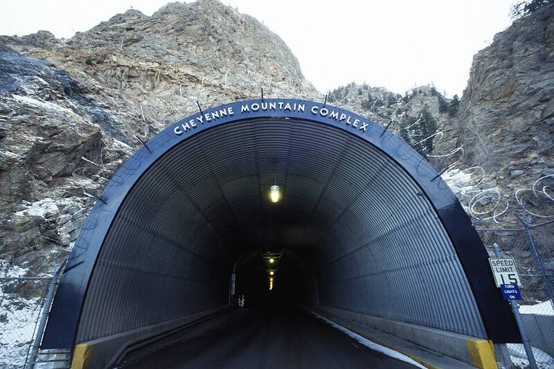

Cheyenne Mountain and Peterson SFB
Colorado

NORAD, which tracks unknown objects in North American airspace. 1
Open in the interactive Watcher
Sources
- Cheyenne Mountain Complex Wikipedia
Colorado

NORAD, which tracks unknown objects in North American airspace. 1
Open in the interactive Watcher